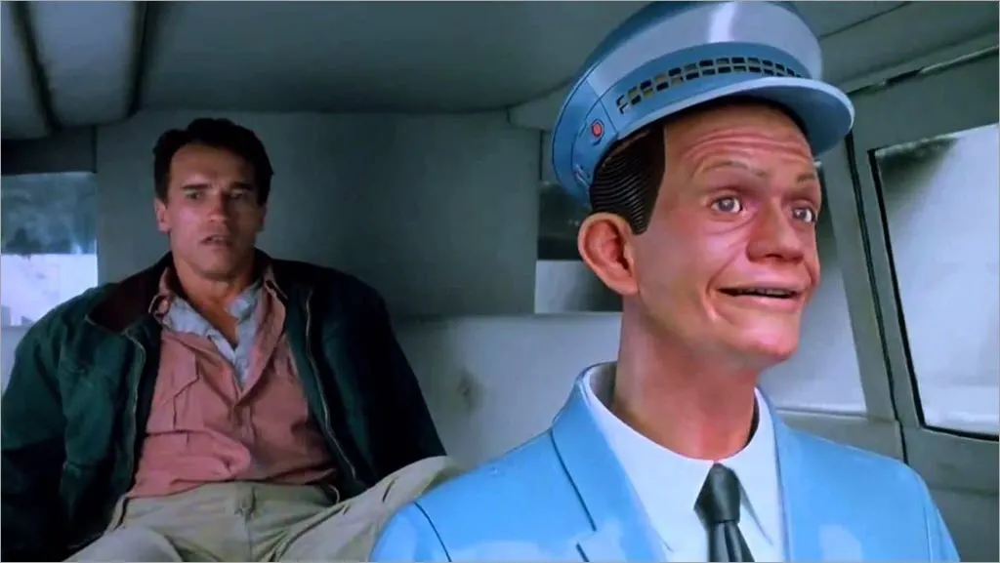
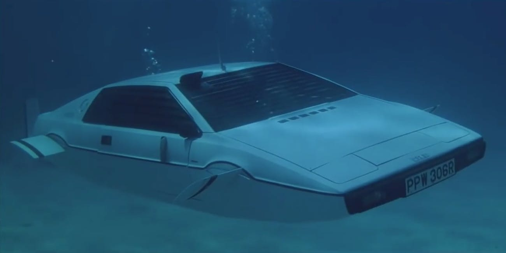
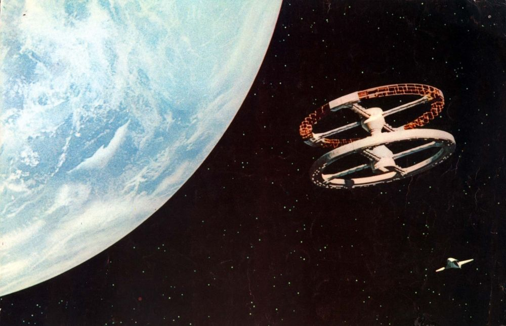
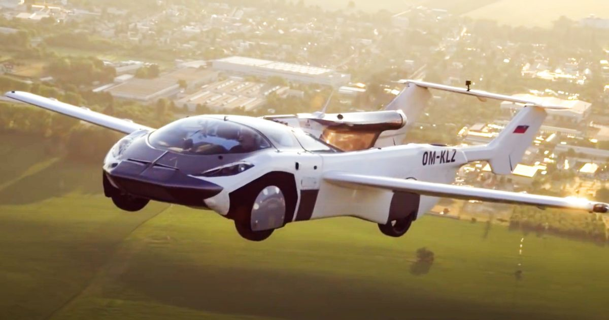

Total Recall (nouvelle 1956, film 2002)
Total Recall est basé sur une nouvelle de Philip K Dick (le même esprit derrière le roman qui a inspiré Blade Runner) et voit le personnage d'Arnold pris dans une lutte de pouvoir saisissante sur une colonie martienne terraformée - ou le fait-il ? Que le film soit ou non une hallucination ou non n'est pas pertinent pour les besoins de cet article - ce qui nous intéresse, c'est la vision intéressante du film sur les voitures autonomes. À un moment donné, Arnie roule avec le Johnnycab animatronique (exprimé par Roberto Picardo) où il est assis en tant que passager pendant que la voiture se conduit toute seule vers la destination.

De nos jours, les voitures autonomes sont développées et testées par une multitude de constructeurs (notament telsa) au point où leur utilisation quotidienne est de plus en plus répandue.
L'espion qui m'aimait (1977)
Y a-t-il quelque chose de plus synonyme de Bond que ses voitures ? Chaque nouveau film nous lance un nouveau concept de ce que votre Aston Martin typique peut faire. Un favori de l'équipe Swifty doit cependant être la voiture sous-marine Lotus Esprit de The Spy Who Loved Me. Ce qui commence comme une chasse aux obligations classique se transforme rapidement en quelque chose de tout à fait plus excitant une fois que Roger Moore envoie son Lotus du bout d'une jetée, seulement pour qu'il se transforme et soit tout aussi mortel sous l'eau.

Fait intéressant, une grande partie des versions réelles des voitures amphibies semblent également être le résultat direct du film. Le PDG de Tesla, Elon Musk, a exprimé son intérêt à créer une version réelle de la voiture sous-marine, après avoir acheté l'original lors d'une vente aux enchères en 2013 et prétend avoir un design. Il existe une version décapotable de la voiture sous-marine sur laquelle vous pouvez mettre la main pour seulement 2 000 000 $ (bouteilles de plongée fournies) qui vous permet d'aller jusqu'à 121 km/h lorsque vous êtes dans l'eau.
2001 : L'odyssée de l'espace (1968)
Vous ne pouvez tout simplement pas avoir une liste de films de science-fiction sans 2001: A Space Odyssey, il a construit l'héritage de l'un des films les meilleurs et les plus influents jamais réalisés. Encore une fois, c'était un film extrêmement visionnaire pour son époque. Sorti à peine 2 mois avant que l'homme n'atterrisse sur la lune, il a abordé des concepts dont nous rêvons encore aujourd'hui.

Stanley Kubrick s'est penché sur l'idée du voyage spatial commercial ou du tourisme spatial des années avant que cela ne devienne une véritable conversation. Le premier "touriste de l'espace" du monde réel, Dennis Tito, n'a atteint l'orbite qu'en (bizarrement) 2001, 33 ans après la sortie du film !
Retour vers le futur (1985)
« Samedi soir prochain, nous vous renvoyons dans le futur ! » Cette célèbre phrase a été prononcée par Doc Brown de Christopher Lloyd il y a 36 ans, et ce serait maintenant le moment idéal pour revisiter la comédie classique du voyage dans le temps. Retour vers le futur, après qu’un prototype de voiture volante ait effectué son vol d’essai avec succès, restant dans les airs 35 minutes complètes, voyageant entre deux villes. Cela nous rapproche des réalités de la Retour vers le futur la franchise.

L’AirCar de Klein Vision a décollé lundi et a été vu voler entre Nitra et la capitale Bratislava. L’AirCar Prototype 1 est propulsé par un moteur BMW donnant au véhicule 160 chevaux, et il est propulsé par une hélice fixe, vous l’aurez deviné. La voiture elle-même ne ressemble que légèrement aux voitures volantes vues dans Retour vers le futur II, et ressemble plus à un avion. L’AirCar a plus de 40 heures de vols d’essai sous son capot. Il vole à 8 200 pieds et peut atteindre une vitesse de croisière maximale de 118 milles à l’heure. Le PDG de Klein Vision Stefan Klein et le co-fondateur de la société Anton Zajac ont conduit la voiture dans la ville après son atterrissage en toute sécurité. Ils disent cela à propos de nous emmener plus loin dans le futur.